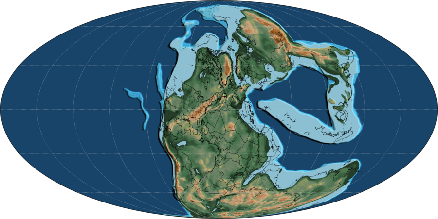
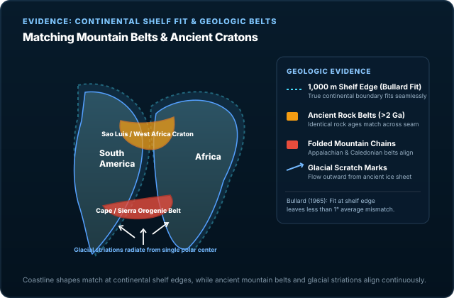
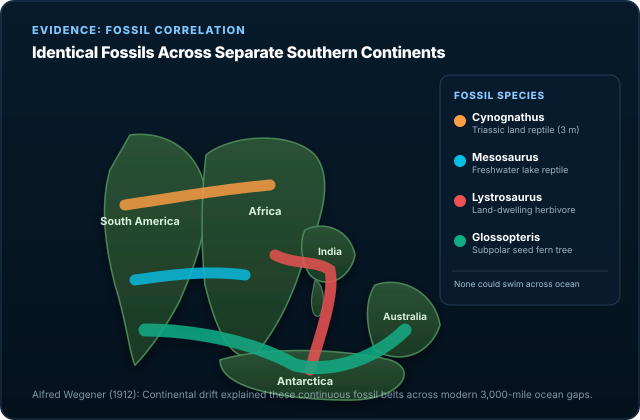
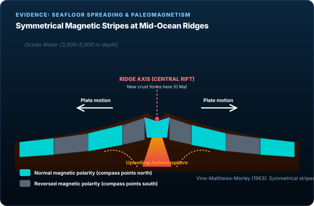

Concept 01
Pangaea was not permanent.
The supercontinent formed and later broke apart because tectonic plates keep moving. Continents are passengers on those plates, so the map of Earth changes over millions of years.
Explore 240 million years with 25 local GPlates model snapshots, spaced 10 million years apart. The map and its age readout use the nearest available snapshot; we do not invent or cross-fade intermediate geography.
Geography: GPlates Web Service, MULLER2019 model, anchor plate 0; EarthByte / University of Sydney, CC BY 4.0. Retrieved October 12, 2026. Modern outlines have been reconstructed and simplified within 0.025° in longitude/latitude. They are not independently reconstructed paleo-shorelines. Compare the EarthByte model and paleogeography datasets.
Concept 01
The supercontinent formed and later broke apart because tectonic plates keep moving. Continents are passengers on those plates, so the map of Earth changes over millions of years.
Concept 02
When crust stretches and splits, magma rises and forms new ocean floor. That is how the Atlantic opened between North America, Eurasia, South America, and Africa.
Concept 03
India did not stay isolated. It moved north and collided with Asia, helping raise the Himalayas. Continental drift is not just about breaking apart. It is also about crashing together.
Concept 04
The continents have not "arrived" forever. The Atlantic is still widening, Africa is moving north, and Australia continues drifting. Today's map is one frame in a much longer tectonic movie.


Evidence 01
The fit between eastern South America and western Africa is not the only clue. Rock belts, ancient cratons, and Appalachian–Caledonian mountain structures also line up across oceans when the continents are reassembled.

Evidence 02
Identical fossils of plants and animals appear on continents now far apart. That makes sense if those continents used to be connected in Gondwana and later drifted away from each other.

Evidence 03
Ocean crust records Earth's magnetic field as it forms. Symmetrical magnetic stripes on either side of mid-ocean ridges helped confirm seafloor spreading and provide the plate tectonic mechanism for drift.
The Tectonic Engine
In 1912, meteorologist Alfred Wegener pointed out compelling evidence for continental drift—matching coastlines, identical fossil bands, and matching glacial till deposits across oceans. Yet the scientific community initially rejected his hypothesis because he proposed that continents somehow plowed directly through solid ocean basalt powered by lunar tidal forces, a mechanism physicists quickly proved was impossible.
The 1960s discovery of seafloor spreading and plate tectonics revealed the true planetary engine: continents do not plow through oceanic crust; they ride atop rigid lithospheric plates that circulate over Earth's ductile asthenosphere. Three physical forces drive this planetary conveyor:
Check Your Understanding